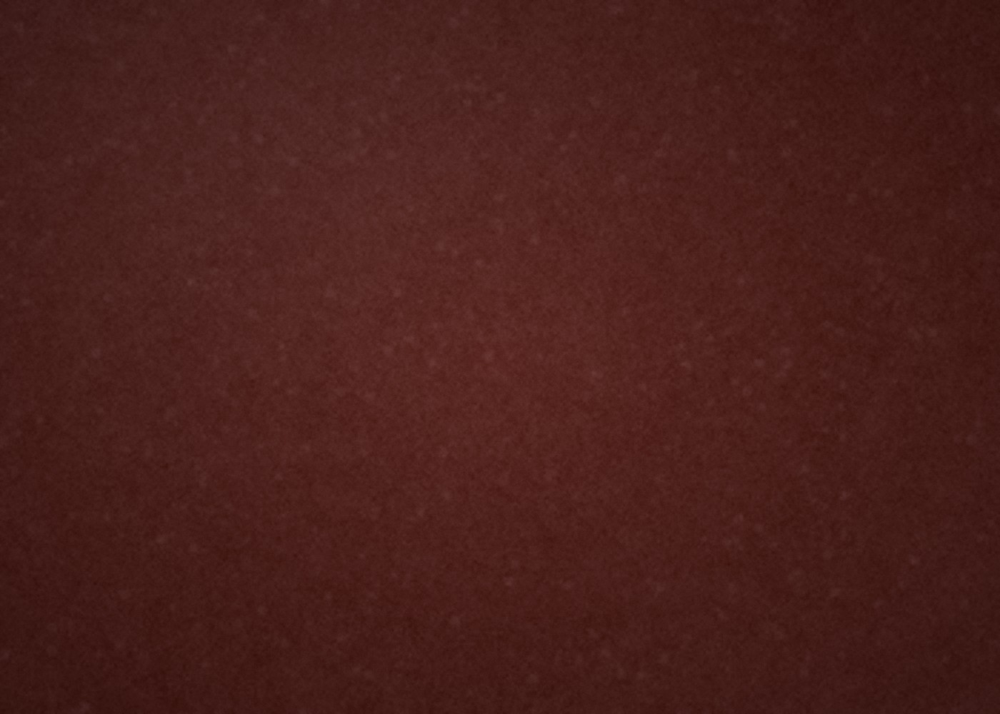

选皮
看纹理、摸厚度、避开虫伤与松面。一张皮只用最好的部分，剩下的宁可不做。
每一道工序都有它的脾气，急不得，也省不得。
看纹理、摸厚度、避开虫伤与松面。一张皮只用最好的部分，剩下的宁可不做。
按版型下刀，一刀到底。裁错一刀，整张皮就废了——这是最没有退路的一步。
菱斩定距，孔距 3.85mm。孔要正、要直、深浅一致，线才会服帖。
马鞍缝，双针单线。每针都要拉紧，缝完的线迹像一条拉链，断一处也不会散。
削边、打磨、上封边液，反复三遍。好的封边摸上去是圆润的，不是一层硬壳。
湿皮印花、刻线、染色，一笔一刀都不可逆。这是工坊里最需要静心的一道。
不同的皮有不同的脾气：有的会变色，有的耐折腾，有的越摸越亮。选皮，其实是在选一种往后的样子。
用植物单宁鞣制，会呼吸、会变色。日晒和使用会让它从浅黄慢慢转向蜜糖色，是「养皮」最直观的皮料。
皮面细密、质地轻盈，耐折不易变形。适合钱夹、卡包这类贴身小皮件，用久了边缘会起一层温润的光。

密度高、油脂足，原本是做马具的皮。做皮带最经用，弯折几年也不容易开裂，属于「一劳永逸」的选择。
工具不贵，贵在顺手。每一件都被手磨出了包浆。
下料的主力。刀要常磨，手要稳，一刀下去不能犹豫。
定孔距用，齿距 3.85mm 最常见。敲下去要垂直，孔才齐。
把皮的边缘削圆，封边才服帖。削多削少，全凭手感。
手缝用线，上过蜡，耐磨不散股。颜色要跟皮料配，也要跟五金配。
敲斩、敲平、整形。木头的力道比铁锤温和，不伤皮面。
一组几十支，印花、压边、刻线。皮雕的第一步，全靠它们定调。
手会记住工序，皮会记住手。王氏手工皮艺 · 工艺手记